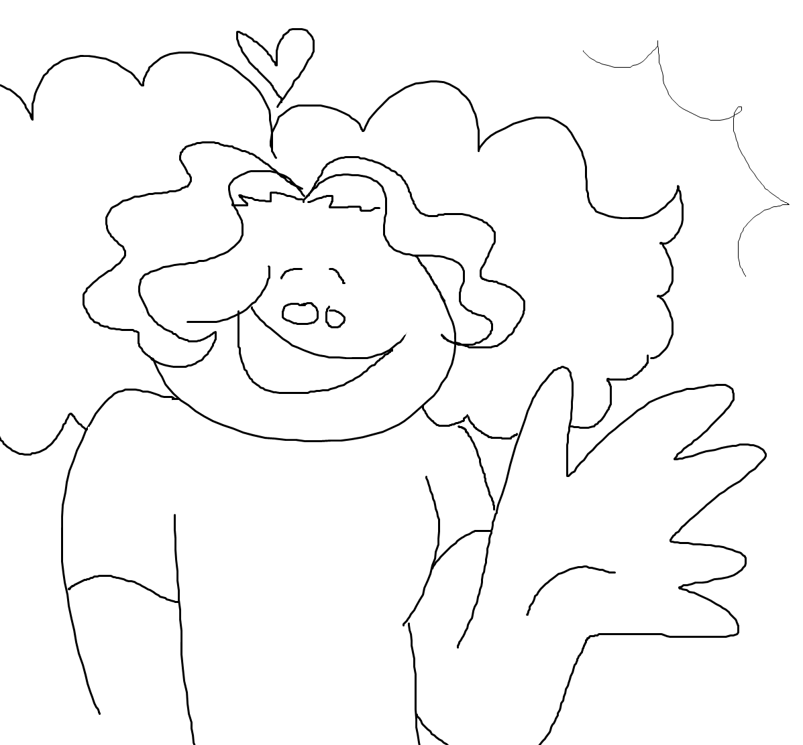

i'm a freshman at vcuarts, and i like to draw(naturally), write, sing, and have intense brainrot over my favorite characters. my favorite pieces of media are good omens, our flag means death, what we do in the shadows(mostly the movie but i also like the show), and now haikyuu, thanks to my roommate. feel free to come chat with me about any of these, i would absolutely love to make more friends with common media interests! i have two siblings, a younger brother in fairfax county and an older sister in germany, and three cats, all sisters, that i miss dearly. i'm so excited for this project seminar because i've never coded my own website before, and the potential for what i can do with the skills i'll learn in ths class is tremendously exciting to me! i think i might like to build a website to store my writing or art to more easily share outside the confines of google sites or social media.
currently i have "breakthrough" from the haikyuu soundtrack stuck in my head, which can be found here. i especially like the piano parts in the song.
this is my art instagram account, located here!
